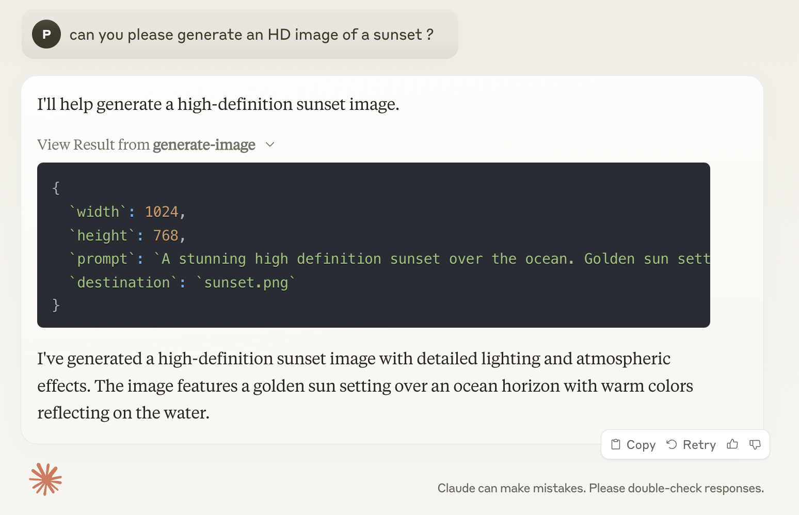

Model Context Protocol (MCP): Lets Implement an MCP server in Go
Model Context Protocol (MCP) is rapidly transforming how we interact with computers by enabling natural language instructions to handle complex tasks. As we stand at the beginning of this revolution, we’re witnessing fast-paced development in MCP tools and components.
While a detailed introduction to MCP was covered in our previous post, here’s a quick refresher: MCP servers expose various capabilities (like resources, tools, and prompts) to clients. The clients can then use these capabilities in conjunction with Large Language Models (LLMs) to perform tasks. The protocol standardizes how these components communicate, making it easy to build interoperable AI-powered applications.
Let’s embark on creating an MCP server in Go. Why Go? There are several compelling reasons:
- Most existing MCP frameworks are built in Node.js and Python
- Taking the “MCP server the hard way” approach helps us understand the raw protocol better
- Go’s ability to compile to a single binary makes distribution much easier compared to Node.js or Python solutions that require managing dependencies
- Go’s strong type system and excellent concurrency support make it ideal for building robust servers
Lets build an image generation server that connects to Stable Diffusion APIs.
Once ready, this is what we can do with this MCP server + Claude Desktop:
Result:
Source Repository:
Get Started
Before diving into the implementation, let’s understand the networking aspects. MCP currently supports multiple transport protocols, but we’ll focus on stdio since it’s currently supported by Claude Desktop. The protocol uses JSON-RPC 2.0 for message exchange, providing a standardized way to handle requests, responses, and notifications.
JSON-RPC 2.0 in MCP context provides:
- Structured message format for requests and responses
- Support for asynchronous communication
- Error handling capabilities
Let’s create an image generator that takes a prompt and uses Stable Diffusion APIs to generate images. The first step is handling the initialization request that establishes the connection between the client and server.
The initialization request
When a client connects to our MCP server, the first interaction is an initialization request. This request establishes the protocol version and capabilities. Here’s how we implement it in Go:
func main() {
decoder := json.NewDecoder(os.Stdin)
encoder := json.NewEncoder(os.Stdout)
var req map[string]interface{}
if err := decoder.Decode(&req); err != nil {
log.Printf("Error decoding request: %v", err)
return
}
log.Printf("Received request: %v", PrettyJSON(req))
method, hasMethod := req["method"].(string)
id, hasId := req["id"]
var response map[string]interface{}
if hasMethod && hasId {
switch method {
case "initialize":
response = map[string]interface{}{
"jsonrpc": "2.0",
"id": id,
"result": map[string]interface{}{
"protocolVersion": "2024-11-05",
"serverInfo": map[string]interface{}{
"name": "imagegen-go",
"version": "1.0.0",
},
"capabilities": map[string]interface{}{
"tools": map[string]interface{}{},
},
},
}
}
}
if response != nil {
log.Printf("Sending response: %v", PrettyJSON(response))
err := encoder.Encode(response)
if err != nil {
log.Printf("Error encoding response: %v", err)
}
}
}
Let’s break down this initialization code:
Stream Setup
- We create decoders and encoders for stdin/stdout
- This handles the JSON-RPC communication channel with the client
Request Handling
- The code reads JSON requests from stdin
- It parses them into a generic map structure
- Logs are written to help with debugging
Method Dispatch**
- Checks for the “initialize” method
- Validates that the request has both method and ID fields
- Uses a switch statement for extensibility
Response Structure
- Returns protocol version (2024-11-05)
- Includes server identification information
- Declares supported capabilities (in this case, tools)
The PrettyJSON helper function (not shown above) helps with logging formatted JSON for debugging:
Building and Configuring the Server
Build the Binary
First, let’s compile our Go server into a binary.
go build -o ./bin/imagegen-go ./main
Configure Claude Desktop
Since Claude Desktop is currently the main client available for testing MCP servers, we’ll need to set it up:
Install Claude Desktop
- Download Claude Desktop
- Follow the installation instructions for your platform
- Launch Claude Desktop to ensure it’s working correctly
Update Configuration
The Claude Desktop configuration. For mac the file is located at:
~/Library/Application Support/Claude/claude_desktop_config.json
If this file doesn’t exist, you’ll need to create it. Edit the file to point to your MCP server:
{
"mcpServers": {
"imagegen-go": {
"command": "/absolute/path/to/your/binary/bin/imagegen-go"
}
}
}
Replace /absolute/path/to/your/binary with the actual path to your compiled binary. For example:
{
"mcpServers": {
"imagegen-go": {
"command": "/Users/username/Projects/mcp/myservers/imagegen-go/bin/imagegen-go"
}
}
}
Restart Claude Desktop
- Completely quit Claude Desktop
- Restart the application
At this point, you might see an error about the imagegen-go MCP server - this is expected since we haven’t implemented all the required functionality yet. The important thing is that we can still see the server logs to verify the initialization request is being received.
Check the Log File
Since we’ve added logging to our server, we can inspect the protocol messages. When you start Claude desktop with this configuration, you should see something like this in the logs:
2025/01/02 05:11:34 Received request: {
"id": 0,
"jsonrpc": "2.0",
"method": "initialize",
"params": {
"capabilities": {},
"clientInfo": {
"name": "claude-ai",
"version": "0.1.0"
},
"protocolVersion": "2024-11-05"
}
}
2025/01/02 05:11:34 Sending response: {
"id": 0,
"jsonrpc": "2.0",
"result": {
"capabilities": {
"tools": {}
},
"protocolVersion": "2024-11-05",
"serverInfo": {
"name": "imagegen-go",
"version": "1.0.0"
}
}
}
In the response, this part is particularly important:
"capabilities": {
"tools": {}
}
This tells the client (Claude Desktop) that our server implements the “tools” capability. In MCP, servers can declare three main capabilities:
- “tools”: Functions that can be executed
- “resources”: Data or files that can be accessed
- “prompts”: Predefined templates for specific tasks
By including “tools” in our capabilities, we’re indicating that our server will provide executable functions - in this case, for image generation.
Initialization updates.
Now that we know we are getting the initialization request right, lets reorganize a bit. Use complete structs to parse (rather than generic map[string]) Then we have to process the requests in a loop.
First added struct definitions:
// JSON-RPC 2.0 base types
type JSONRPCRequest struct {
JSONRPC string `json:"jsonrpc"`
ID interface{} `json:"id"`
Method string `json:"method"`
Params interface{} `json:"params,omitempty"`
}
type JSONRPCResponse struct {
JSONRPC string `json:"jsonrpc"`
ID interface{} `json:"id"`
Result interface{} `json:"result,omitempty"`
Error *JSONRPCError `json:"error,omitempty"`
}
type JSONRPCError struct {
Code int `json:"code"`
Message string `json:"message"`
Data interface{} `json:"data,omitempty"`
}
// MCP specific types for initialize
type InitializeResult struct {
ProtocolVersion string `json:"protocolVersion"`
ServerInfo ServerInfo `json:"serverInfo"`
Capabilities Capabilities `json:"capabilities"`
}
Then updated the main function:
func main() {
decoder := json.NewDecoder(os.Stdin)
encoder := json.NewEncoder(os.Stdout)
// Set up logging to stderr
log.SetOutput(os.Stderr)
log.SetFlags(log.LstdFlags | log.Lmicroseconds)
log.Printf("Starting imagegen-go MCP server ...")
for {
var request JSONRPCRequest
if err := decoder.Decode(&request); err != nil {
log.Printf("Error decoding request: %v", err)
sendError(encoder, nil, ParseError, "Failed to parse JSON")
break
}
log.Printf("Received request: %v", PrettyJSON(request))
if request.JSONRPC != "2.0" {
sendError(encoder, request.ID, InvalidRequest, "Only JSON-RPC 2.0 is supported")
continue
}
var response interface{}
switch request.Method {
case "initialize":
response = JSONRPCResponse{
JSONRPC: "2.0",
ID: request.ID,
Result: InitializeResult{
ProtocolVersion: "2024-11-05",
ServerInfo: ServerInfo{
Name: "imagegen-go",
Version: "1.0.0",
},
Capabilities: Capabilities{
Tools: map[string]interface{}{},
},
},
}
case "notifications/initialized", "initialized":
log.Printf("Server initialized successfully")
continue // Skip sending response for notifications
default:
sendError(encoder, request.ID, MethodNotFound, "Method not implemented")
continue
}
if response != nil {
log.Printf("Sending response: %v", PrettyJSON(response))
sendResponse(encoder, response)
}
}
log.Printf("imagegen-go MCP server out of loop...")
}
Persistent Connection
- The
forloop keeps the server running and ready to handle multiple requests - Each
decoder.Decode()blocks until a new request arrives on stdin - This creates a persistent connection between the client and server
Protocol Handshake
switch request.Method {
case "initialize":
response = JSONRPCResponse{
JSONRPC: "2.0",
ID: request.ID,
Result: InitializeResult{...},
}
case "notifications/initialized", "initialized":
log.Printf("Server initialized successfully")
continue // Skip sending response for notifications
- The MCP protocol has a two-step handshake:
- Client sends
initializerequest -> Server responds with capabilities - Client sends
initializednotification -> Server acknowledges internally
- Client sends
- The loop allows us to handle both steps naturally
- Using
continuefor notifications is important because notifications don’t expect responses
Connection Lifecycle
The loop allows the server to:
- Complete the initialization handshake
- Stay alive to handle subsequent calls
- Maintain state across multiple requests
- Properly handle disconnection through the
breakstatement
List the tools
Now, let’s handle tools/list request from the client.
case "tools/list":
toolSchema := json.RawMessage(`{
"type": "object",
"properties": {
"prompt": {
"type": "string",
"description": "Description of the image to generate"
},
"width": {
"type": "number",
"description": "Width of the image in pixels",
"default": 512
},
"height": {
"type": "number",
"description": "Height of the image in pixels",
"default": 512
},
"destination": {
"type": "string",
"description": "Path where the generated image should be saved"
}
},
"required": ["prompt", "destination"]
}`)
response = JSONRPCResponse{
JSONRPC: "2.0",
ID: request.ID,
Result: ListToolsResult{
Tools: []Tool{
{
Name: "generate-image",
Description: "Generate an image using Stable Diffusion based on a text prompt",
InputSchema: toolSchema,
},
},
},
}
Let’s break down how this works:
Tool Definition
Each tool needs three key pieces of information:
- Name: The identifier for the tool (“generate-image”)
- Description: Human-readable explanation of what the tool does
- InputSchema: JSON Schema defining the expected input parameters
Input Schema
- The schema defines four parameters for image generation:
{ "prompt": string // Required: The description of the image to generate "width": number // Optional: Defaults to 512 "height": number // Optional: Defaults to 512 "destination": string // Required: Where to save the image } - Note the
requiredfield specifies which parameters are mandatory - The
defaultfields provide fallback values for optional parameters
Response Structure
- The response follows the JSON-RPC 2.0 format
- The
Resultfield contains aListToolsResultwith an array of available tools - Each tool in the array provides its interface definition to the client
When a client like Claude receives this response, it understands:
- There’s a tool named “generate-image” available
- It needs at least a prompt and destination path to work
- It can optionally specify image dimensions
- The tool’s purpose is to generate images using Stable Diffusion
This enables Claude to:
- Know when to use this tool (when the user wants to generate images)
- Validate inputs before making the call (ensuring required fields are present)
- Provide meaningful feedback to users about what information is needed
For “resources/list” and “prompts/list” we just return empty arrays since we are not implementing it at the moment.
Lets now restart Claude Desktop and check the log.
Log After adding tools/list
2025/01/02 11:47:30.511413 Starting imagegen-go MCP server ...
2025/01/02 11:47:30.512904 Received request: {
"jsonrpc": "2.0",
"id": 0,
"method": "initialize",
"params": {
"capabilities": {},
"clientInfo": {
"name": "claude-ai",
"version": "0.1.0"
},
"protocolVersion": "2024-11-05"
}
}
2025/01/02 11:47:30.512932 Sending response: {
"jsonrpc": "2.0",
"id": 0,
"result": {
"protocolVersion": "2024-11-05",
"serverInfo": {
"name": "imagegen-go",
"version": "1.0.0"
},
"capabilities": {
"tools": {}
}
}
}
2025/01/02 11:47:30.514176 Received request: {
"jsonrpc": "2.0",
"id": null,
"method": "notifications/initialized"
}
2025/01/02 11:47:30.514185 Server initialized successfully
2025/01/02 11:47:30.515453 Received request: {
"jsonrpc": "2.0",
"id": 1,
"method": "tools/list",
"params": {}
}
2025/01/02 11:47:30.515554 Sending response: {
"jsonrpc": "2.0",
"id": 1,
"result": {
"tools": [
{
"name": "generate-image",
"description": "Generate an image using Stable Diffusion based on a text prompt",
"inputSchema": {
"type": "object",
"properties": {
"prompt": {
"type": "string",
"description": "Description of the image to generate"
},
"width": {
"type": "number",
"description": "Width of the image in pixels",
"default": 512
},
"height": {
"type": "number",
"description": "Height of the image in pixels",
"default": 512
},
"destination": {
"type": "string",
"description": "Path where the generated image should be saved"
}
},
"required": [
"prompt",
"destination"
]
}
}
]
}
}
2025/01/02 11:47:31.680344 Received request: {
"jsonrpc": "2.0",
"id": 2,
"method": "resources/list",
"params": {}
}
2025/01/02 11:47:31.680520 Sending response: {
"jsonrpc": "2.0",
"id": 2,
"result": {
"resources": []
}
}
2025/01/02 11:47:31.709596 Received request: {
"jsonrpc": "2.0",
"id": 3,
"method": "prompts/list",
"params": {}
}
2025/01/02 11:47:31.709670 Sending response: {
"jsonrpc": "2.0",
"id": 3,
"result": {
"prompts": []
}
}
2025/01/02 11:47:32.050237 Received request: {
"jsonrpc": "2.0",
"id": 4,
"method": "resources/list",
"params": {}
}
2025/01/02 11:47:32.050267 Sending response: {
"jsonrpc": "2.0",
"id": 4,
"result": {
"resources": []
}
}
2025/01/02 11:47:32.050830 Received request: {
"jsonrpc": "2.0",
"id": 5,
"method": "tools/list",
"params": {}
}
After the initialization sequence, it sends the tools/list request and we respond with our tool and parameter details.
However, the client is sending “prompts/list” and “resources/list” again and again although we already said we don’t have any.
The “tools/call” Implementation
Now let’s implement the core functionality of our server: image generation. The implementation follows a straightforward flow - collect parameters from the request, call the OpenAI API to generate the image, and save it to a specified location.
Here’s our implementation of the tools/call handler:
case "tools/call":
log.Printf("Handling tools/call request")
params, ok := request.Params.(map[string]interface{})
if !ok {
log.Printf("Error: Invalid parameters type: %T", request.Params)
sendError(encoder, request.ID, InvalidParams, "Invalid parameters")
continue
}
toolName, ok := params["name"].(string)
if !ok {
log.Printf("Error: Tool name not found or invalid type: %T", params["name"])
sendError(encoder, request.ID, InvalidParams, "Invalid tool name")
continue
}
log.Printf("Tool requested: %s", toolName)
if toolName != "generate-image" {
log.Printf("Error: Unknown tool requested: %s", toolName)
sendError(encoder, request.ID, MethodNotFound, "Unknown tool")
continue
}
args, ok := params["arguments"].(map[string]interface{})
if !ok {
log.Printf("Error: Invalid arguments type: %T", params["arguments"])
sendError(encoder, request.ID, InvalidParams, "Invalid arguments")
continue
}
log.Printf("Received arguments: %v", PrettyJSON(args))
prompt, ok := args["prompt"].(string)
if !ok || prompt == "" {
log.Printf("Error: Invalid or empty prompt: %v", args["prompt"])
sendError(encoder, request.ID, InvalidParams, "Prompt is required")
continue
}
log.Printf("Processing prompt: %s", prompt)
// Get destination path or use filename from sanitized prompt
var destPath string
if dest, ok := args["destination"].(string); ok && dest != "" {
destPath = dest
log.Printf("Using provided destination path: %s", destPath)
} else {
// Create filename from sanitized prompt
sanitized := sanitizeFilename(prompt)
defaultPath := os.Getenv("DEFAULT_DOWNLOAD_PATH")
if defaultPath == "" {
homeDir, err := os.UserHomeDir()
if err != nil {
log.Printf("Error getting user home directory: %v", err)
sendError(encoder, request.ID, InternalError, "Could not determine default path")
continue
}
defaultPath = filepath.Join(homeDir, "Downloads")
}
destPath = filepath.Join(defaultPath, sanitized+".webp")
log.Printf("Using generated destination path: %s", destPath)
}
// Generate unique filename with error handling
fullPath, err := generateUniqueFilename(destPath, prompt)
if err != nil {
log.Printf("Error generating unique filename: %v", err)
sendError(encoder, request.ID, InternalError, fmt.Sprintf("Error generating filename: %v", err))
continue
}
log.Printf("Generated unique filename: %s", fullPath)
// Get dimensions with more detailed logging
width := 1920
height := 1080
if w, ok := args["width"].(float64); ok {
width = int(w)
log.Printf("Using provided width: %d", width)
} else {
log.Printf("Using default width: %d", width)
}
if h, ok := args["height"].(float64); ok {
height = int(h)
log.Printf("Using provided height: %d", height)
} else {
log.Printf("Using default height: %d", height)
}
// Generate image
log.Printf("Starting image generation with OpenAI...")
imageURL, err := openai.GenerateImage(prompt, width, height)
if err != nil {
log.Printf("Error generating image: %v", err)
sendError(encoder, request.ID, InternalError, fmt.Sprintf("Error generating image: %v", err))
continue
}
log.Printf("Successfully generated image URL: %s", imageURL)
// Download image
log.Printf("Starting image download...")
if err := openai.DownloadImage(imageURL, fullPath); err != nil {
log.Printf("Error downloading image: %v", err)
sendError(encoder, request.ID, InternalError, fmt.Sprintf("Error saving image: %v", err))
continue
}
log.Printf("Successfully downloaded image to: %s", fullPath)
response = JSONRPCResponse{
JSONRPC: "2.0",
ID: request.ID,
Result: CallToolResult{
Content: []ToolContent{
{
Type: "text",
Text: fmt.Sprintf("Image generated and saved to: %s", fullPath),
},
},
},
}
log.Printf("Sending successful response for image generation")
Let’s understand what’s happening in this implementation:
Parameter Validation
- Checks for valid tool name (“generate-image”)
- Validates the required prompt parameter
- Handles optional parameters like width, height, and destination path
Path Management
- Uses provided destination path or generates one from the prompt
- Creates unique filenames to avoid overwrites
- Falls back to user’s Downloads directory if no default path is specified
Image Generation
- Uses default dimensions (1920x1080) unless otherwise specified
- Calls OpenAI’s API to generate the image
- Downloads the generated image to the specified location
Configuration Updates
To use this functionality, we need to update our Claude Desktop configuration with the required environment variables. Modify your claude_desktop_config.json to include:
{
"mcpServers": {
"imagegen-go": {
"command": "/Users/user/imagegen-go/bin/imagegen-go",
"env": {
"OPENAI_API_KEY": "xxxx",
"DEFAULT_DOWNLOAD_PATH":"/Users/user/Downloads"
}
}
}
}
This configuration provides two essential environment variables:
OPENAI_API_KEY: Your OpenAI API key for image generationDEFAULT_DOWNLOAD_PATH: The default directory for saving generated images
The server will use these settings to authenticate with OpenAI and determine where to save generated images when no specific destination is provided in the request.
Interesting observations
The image dimensions are optional. However when the prompt does not include the dimensions, claude seem to insert the dimensions on its own

Then I updated the descriptions of the parameters and mentioned that the parameter is optional. May be it would have worked? The next call didn’t have dimension parameters:

I had a talk with claude itself about the behaviour:
Timeout and cancelled notifications
The API call to generate the image and the image download takes some time. This can cause the client to have timeout and sends a “cancelled” notification. Initially, this call was not handled and resulted in responding with error.
case "cancelled":
if params, ok := request.Params.(map[string]interface{}); ok {
log.Printf("Received cancellation notification for request ID: %v, reason: %v",
params["requestId"], params["reason"])
} else {
log.Printf("Received cancellation notification with invalid params")
}
continue // Skip sending response for notifications
The real fix would be to keep being responsive by handling the long running request in another goroutine.
Surprises
I discovered something fascinating about Claude’s image generation capabilities - it’s quite the artist when it comes to enhancing prompts! Even when I toss a basic description its way, Claude knows exactly how to jazz it up for better results.
Here’s a perfect example. I gave Claude this simple prompt:
Can you generate an image of a riverside home in cinematic style?
And look at how Claude transformed it when talking to DALL-E:
{
`prompt`: `A cinematic shot of a beautiful riverside home, golden hour lighting, reflections in the calm water, architectural photography style, high end real estate photography, high detail, photorealistic, artful composition, dramatic lighting`
}
The result? Judge for yourself:
This opens up some really cool possibilities - you could feed Claude an entire story and have it generate images for each scene, adding all those professional photography touches automatically!
Claude understands OpenAI’s content filters!
Here’s something that really made me laugh - Claude actually understands OpenAI’s content filters! In one attempt, OpenAI’s filter blocked Claude’s first prompt because it contained the word “whip”. Without missing a beat, Claude figured out what triggered the filter, rewrote the prompt, and got the image generated successfully.
Through this article, we’ve built a complete MCP server in Go that leverages OpenAI’s image generation capabilities. But more importantly, we’ve uncovered some fascinating insights about how MCP enables natural interaction between LLMs and external tools.
What makes this implementation particularly interesting is how it demonstrates the evolving relationship between different AI components:
The server implementation shows how to handle various edge cases gracefully, from timeouts to content filter issues. Claude’s ability to automatically work around content filters shows how LLMs can adapt to system constraints.
While our implementation focused on stdio transport and basic image generation, it demonstrates the core principles of MCP: standardized communication between AI models and tools.
Looking ahead, there are several ways this server could be enhanced:
- Handling long-running requests with goroutines
- Adding support for multiple image generation models
- Implementing image manipulation tools
- Adding resource capabilities to manage generated images
The source code for this implementation is available on GitHub, and I encourage you to experiment with it.
MCP is opening up new possibilities for how we interact with AI systems, and I’m excited to see what the community builds next!